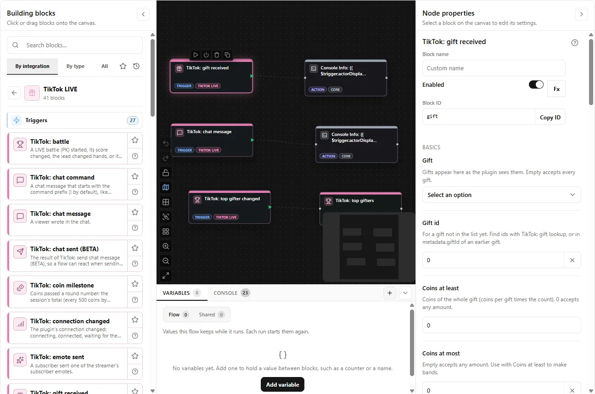

Example values. The field names are the real ones a flow reads.
Match the gift, not its name
Gift ids are the same in every language, so a flow made in Lisbon fires on a computer in Seoul. Pick a gift from the list the plugin learns as gifts arrive, or set a band of coins.
Streakable gifts count once, when the viewer stops tapping, with every tap inside. A separate streak trigger follows each tap for combos.
gift-streakrepeatCount10
giftcoins10once, when the streak ends
More than an alert for every viewer
Joins that remember
Know a first visit from a viewer who came back from an earlier LIVE.
isFirstJoinisReturninguserJoins
Follows and shares
One follow per viewer per session, even when they unfollow and follow again.
isFirstFollowThisSession
Milestones
Every 1 000 likes, every 500 coins, every 50 viewers, or the steps you choose. A late join does not fire the ones already passed.
like-milestonecoin-milestoneviewer-count
Chat commands
!dance fast arrives split into the command and its arguments.
commandargs
A ranking that updates itself
Each gift carries the sender's place and total. Another trigger fires when the top three changes hands.
senderRanktop-gifter-changetop-gifters
Battles, scored from your side
The battle trigger fires when a battle starts, when the score moves, when the lead changes hands and when it ends, with the result from the streamer's point of view.
start0to0against @rival_creator
update40to310leader: opponent
lead-change720to650leader: host
end1 240to880result: win
27 triggers, 8 actions and 6 inputs
All of them in one TikTok LIVE group of the block palette.

The plugin in the OSC Flow Studio flow editor, with a flow of TikTok triggers and the gift trigger's settings.
Triggers
gift receivedA viewer sent a gift.
gift streakEvery tap of a streakable gift while the viewer keeps sending, then once more when the streak ends.
coin milestoneCoins passed a round number: the session's total (every 500 coins by default) or one viewer's total (every 100).
top gifter changedSomeone new holds first, second or third place among this session's gifters.
treasure chestA viewer dropped a treasure chest (an envelope of coins for the audience).
viewer joinedA viewer entered the LIVE.
new followerA viewer followed the streamer during the LIVE.
LIVE sharedA viewer shared the LIVE.
new subscriberA viewer subscribed to the streamer, or renewed.
likesA viewer tapped likes.
like milestoneThe LIVE's total likes passed a round number (every 1000 by default, set under Advanced).
viewer count changedThe number of viewers in the LIVE changed.
chat messageA viewer wrote in the chat.
chat commandA chat message that starts with the command prefix (! by default), like !dance fast.
question askedA viewer used TikTok's Q&A to ask a question.
emote sentA subscriber sent one of the streamer's subscriber emotes.
message pinnedThe streamer or a moderator pinned a chat message, or removed the pin.
messages removedChat messages were removed by TikTok or a moderator.
super fanSuper fan activity: a viewer became a super fan, moved up, or a super fan box dropped.
battleA LIVE battle (PK) started, its score changed, the lead changed hands, or it ended.
pollThe streamer started a poll, the votes changed, or it ended.
LIVE goalProgress on the streamer's LIVE goal changed.
ranking updateThe LIVE's place in a TikTok ranking (hourly, daily, weekly) changed.
stream stateThe plugin reached a new LIVE, or the stream was paused, resumed, ended or suspended by TikTok.
connection changedThe plugin's connection changed: connecting, connected, waiting for the streamer to go live, disconnected, error or stopped.
chat sent (BETA)The result of TikTok: send chat message (BETA), so a flow can react when sending fails.
other TikTok event (advanced)Every TikTok message the plugin does not turn into a block of its own, as TikTok sent it.
Actions
connectConnects to the LIVE now, or reconnects at once instead of waiting for the next retry.
disconnectStops listening to the LIVE until TikTok: connect runs or the plugin restarts.
wait until liveWaits up to 25 seconds for the streamer to go live, then connects.
refresh gift listLoads the room's whole gift list into the gift picker.
reset sessionStarts the session counters over: coins and gifters, likes, or everything.
send chat message (BETA)BETA, may be switched off by the plugin maintainers without notice.
chat sign-in (BETA)Opens a sign-in page on this computer for sending chat.
chat sign-out (BETA)Deletes the saved TikTok session cookies from the vault.
Inputs
connection statusHow the plugin is doing: connected or not, why, and whether chat sending is available.
LIVE statsThe session's numbers: viewers, likes, coins and activity counts.
gift lookupFinds a gift the plugin knows, by id or by English name, to get its id and price.
battle scoreThe current battle's score from the streamer's side, or the last battle's result.
top giftersThe session's gifters ranked by coins.
viewer statsWhat one viewer has done this session.
Install it from the catalog
Add the catalog
In OSC Flow Studio, open Integrations, then Sources, and paste the catalog URL.
Open Catalog, pick TikTok LIVE and review what it asks for: network access, the vault and the gift list.
Type the username
Under General, enter the @handle that goes live. The plugin waits while it is offline and connects when the LIVE starts.
Direct connection
The plugin connects to TikTok itself, with signatures from Euler Stream. A free Euler key raises the connection limit; the full gift list and sending chat need paid plans.
TikFinity bridge
When TikFinity already runs on this computer, the plugin can listen to its local connection instead and needs nothing from Euler Stream.
Sending chat is BETA. It is off by default, can be switched off by the maintainers at any time, and TikTok may suspend accounts that post automatically.